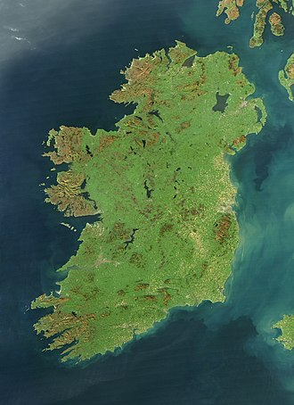

What does Ireland have to offer?
Cliffs of Moher - Walk the safe, paved pathways and view the famous Cliffs on Europe's western frontier.
Guinness Storehouse - Savour the sights, sounds, tastes, and aromas of Guinness, one of the worlds most famous beer.
The Burren - The Burren has been referred to as fertile rock, internationally famous for its landscape and unique flora.
Wicklow Mountains - The Wicklow Mountains are a stunning expanse of nature. Enjoy hiking, cycling, birdwatching, and scenic driving and much more.
Dublin is the capital of Ireland.
The west of Ireland is known for its untouched nature.
The two official languages of Ireland are Irish and English.
Irish is only spoken in Gaeltacht areas.
The geography of Ireland comprises relatively low-lying mountains surrounding a central plain, with several navigable rivers extending inland. Its lush vegetation is a product of its mild but changeable climate which is free of extremes in temperature. Much of Ireland was woodland until the end of the Middle Ages.